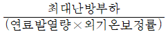
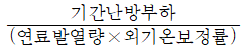
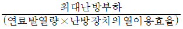
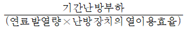
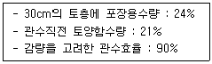
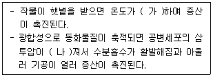
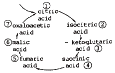
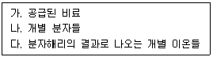

시설원예기사 (2021-03-07 기출문제)
1과목: 원예학개론
1. 원예작물의 저장 전처리에 대한 설명으로 틀린 것은?
- 고구마의 큐어링에는 10℃ 정도의 온도와 95%의 습도가 적당하다.
- 냉각매체의 이동속도는 예냉효율에 영향을 미친다.
- '신고' 배는 수확 후 그늘에서 봉지에 싼 채로 10~15일 정도 방치한 후 선별하여 저장고에 입고한다.
- 예냉은 빠르게 품온을 낮추고 호흡을 억제시킬 수 있어 저장에 도움을 준다.
(정답률: 알수없음)

2. 포도의 화진(꽃떨이)현상에 관한 설명 중 옳지 않은 것은?
- 거봉에 많으며 우리나라 주요 품종인 캠벨 얼리에도 발생한다.
- 개화기에 온도가 부족하면 수정률이 낮아져서 심하게 발생한다.
- 붕소가 결핍된 토양 조건 하에서 심하게 발생한다.
- 결과모지에 연령이 오래된 것에서는 발생이 거의 없다.
(정답률: 알수없음)
3. 사과 재배 시 질소(N) 흡수량이 과다한 경우 과실 착색이 지연되는데, 그 원인으로 틀린 것은?
- 나무의 영양생장 촉진으로 광의 투자를 방해하기 때문이다.
- 과실의 비대기를 지연시켜 성숙이 늦기 때문이다.
- 리코핀(lycopene)색소의 발현이 늦기 때문이다.
- 과피의 엽록소 함량이 증가되기 때문이다.
(정답률: 40%)
4. 식물 명명규약에 따른 학명의 표기방법으로 옳은 것은?
- 이명법에 따라 속명과 품종명으로 구성한다.
- 속명과 종명은 라틴어를 사용하거나 라틴어화하고 이탤릭체로 표기한다.
- 속명은 형용사로 종명은 명사로 표기한다.
- 명명자명은 끝에 넣되 소문자로만 표기한다.
(정답률: 50%)
5. 화훼 작물의 개화조절을 위하여 가장 많이 이용되고 있는 것으로만 짝지어진 것은?
- 일장, 습도
- 관수, 이산화탄소
- 일장, 온도
- 광도, 습도
(정답률: 알수없음)
6. 다음 중 푼파일년초로 분류하기 어려운 것은?
- 백일홍
- 봉선화
- 맨드라미
- 다기탈리스
(정답률: 37%)
7. 복숭아의 개심자연형 수형이 완성되었을 때 적당한 주간의 길이는 약 얼마인가?
- 20cm~30cm
- 50cm~80cm
- 100cm~130cm
- 150cm~180cm
(정답률: 알수없음)
8. 시설재배 시 이산화탄소 농도조절의 방식으로 적합하지 않은 것은?
- 저온기의 밀폐된 시설 내부의 이산화탄소 농도 일변화는 야간에 높고 주간에는 낮다.
- 이산화탄소 시비에는 주로 액화이산화탄소가 이용되며, 하루 중 광량이 가장 강한 오후 시간대에 시비한다.
- 주간에 외부로부터 공기의 공급이 차단된 상태에서 광합성이 활발하게 이루어지면 이산화탄소 농도가 크게 떨어진다.
- 일반적인 원예작물의 이산화탄소 포화점은 대기 중 이산화탄소 농도보다 높기 때문에 이산화탄소를 공급하면 생육이 촉진된다.
(정답률: 알수없음)
9. 다음 중 호온성 채소에 속하는 것은?
- 무
- 당근
- 감자
- 토란
(정답률: 알수없음)
10. 배추 중륵(中肋)의 안쪽이 코르크화 되어 갈색 또는 흑색으로 트고, 잎은 오그라져 가장자리가 고사한다면 무엇의 결핍증인가?
- Ca
- Mg
- B
- Mo
(정답률: 알수없음)
11. 다음 중 자연상태에서 교잡률이 4% 이하인 자식성 채소는?
- 양파
- 상추
- 배추
- 무
(정답률: 알수없음)
12. 다음 중 화훼류 저온처리(低溫處理)와 관계가 있는 것은?
- Vernalin
- Florigen
- Phytochrome
- Rhizocaline
(정답률: 알수없음)
13. 다음 중 웅성불임계통을 종자친으로 하여 F1(1대교잡종)종자를 채종할 수 없는 작물은?
- 무
- 배추
- 양배추
- 꽃양배추
(정답률: 알수없음)
14. 다음 중 아나나스계 화훼류의 꽃 피기를 촉진시킬 수 있는 물질은?
- 지베렐린
- 에틸렌
- 옥신
- 카이네틴
(정답률: 알수없음)
15. 화훼식물 중 산성 토양에서 잘 자라는 것은?
- 제라늄
- 철쭉류
- 매리골드
- 아이리스
(정답률: 알수없음)
16. 원예의 개념 및 범위에 대한 설명이 옳지 않은 것은?
- 원예는 꽃이 피는 식물의 재배만을 의미한다.
- 벼나 보리도 관상용으로 재배하면 화훼원예로 분류할 수 있다.
- 다른 작물에 비하여 수입증대에 이바지하는 특수농업이다.
- 원예는 일반적으로 제한된 며적에 기술집약적인 형태로 재배하는 특징을 가지고 있다.
(정답률: 알수없음)
17. 가을에 심는 구근끼리 짝지어지지 않은 것은?
- 튤립-수선화
- 나리-히야신스
- 칸나-다알리아
- 프리지아-크로커스
(정답률: 알수없음)
18. 딸기를 8월 중에 고랭지에서 육모하는 이유는?
- 내한성 강화
- 화아분화 촉진
- 런너 발생촉진
- 병해충 회피 및 방제
(정답률: 알수없음)
19. 공정(plug)육모에 대한 설명으로 적합하지 않은 것은?
- 상토의 용량이 일반 관행육모 보다 적다.
- 사용종자는 모양이 둥근 것이 기계 파종에 적합하다.
- 프라이밍(priming)처리를 하여 발아가 균일한 종자를 사용하는 것이 바람직하다.
- 트레이(tray)의 상토 용량이 적으므로 완효성 비료를 사용하여 비효가 오래 지속되도록 하는 것이 좋다.
(정답률: 알수없음)
20. 다음 화훼종자 중 씨젖(배유)이 없는 것은?
- 난
- 붗꽃
- 수선
- 카네이션
(정답률: 알수없음)
2과목: 시설원예학
21. 온실의 연료 소비량 추정식으로 가장 적합한 것은?




(정답률: 37%)
22. DIF 효과를 이용하여 작물의 신장억제가 가능한 방법은?
- 야간 2시간 동안의 고온처리
- 일몰 후 2시간 동안의 저온처리
- 일몰 전 2시간 동안의 저온처리
- 일출 직후 2~3시간 동안의 저온처리
(정답률: 알수없음)
23. 세계에서 최초로 설치되어 실용화된 태양광이용형 식물공장은?
- 오스트리아의 Ruthner사 농장
- 덴마크의 Christesen사 농장
- 미국의 General electric사
- 미국의 General food사
(정답률: 알수없음)
24. 병해의 경감에 가장 효과적인 관수 방식은?
- 호스관수방식
- 점적관수방식
- 미스트관수방식
- 살수관수방식
(정답률: 알수없음)
25. 움직이고 있는 공기가 어떤 물체에 부딪혀 속도가 약해지면 동압의 일부가 정압으로 변한다. 이 때 동압 중에서 정압으로 변하는 비율은?
- 풍압계수
- 동압계수
- 정압계수
- 압력계수
(정답률: 알수없음)
26. 음의 조건에서 시설재배의 1m2당 관수량은?

- 9mm
- 10mm
- 90mm
- 100mm
(정답률: 알수없음)
27. 시설 내 투과광의 파장(광질)이 작물생육에 미치는 영향 중 가장 옳은 것은?
- 가시부의 510~610nm가 광합성에 가장 유효하며, 자외부와 적외부도 생육에 영향을 미친다.
- 가시부의 510~610nm가 광합성에 가장 유효하며, 자외부와 적외부도 생육에 영향을 미치지 않는다.
- 가시부의 610~700nm가 광합성에 가장 유효하며, 자외부와 적외부도 생육에 영향을 미치지 않는다.
- 가시부의 610~700nm가 광합성에 가장 유효하며, 자외부와 적외부도 생육에 영향을 미친다.
(정답률: 40%)
28. 원예작물에 이용되는 토양수분은 중력수, 정상 생육유효수분, 유효수분, 이효성수분, 난효성수분, 비유효성수분으로 분류된다. 이 중 “유효수분”의 정의로 가장 적합한 것은?
- 포장용수량에서 생장저해 수분점 사이의 수분
- 포장용수량에서 초기위조점 사이의 수분
- 포장용수량에서 영구위조점 사이의 수분
- 초기위조점에서 영구위조점 사이의 수분
(정답률: 알수없음)
29. 1~2년생 사과나무 가지의 목질부까지 닿도록 깊이 산란하여 연속적인 상처를 내어 가지를 고사시키는 해충은?
- 말매미
- 풍뎅이
- 면충
- 뽕나무하늘소
(정답률: 알수없음)
30. 배나무 붉은별무늬병(赤星病)의 중간 기주가 되는 식물은?
- 탱자나무
- 향나무
- 측백나무
- 회양목
(정답률: 30%)
31. 정부의 농가보급형 하우스 모델 중 1-1S 형과 1-1W형의 너비(폭)는 각각 얼마인가?
- 5.4m와 6.6m
- 5.9m와 7.0m
- 6.0m와 7.5m
- 6.5m와 7.5m
(정답률: 알수없음)
32. 다음 중 온실의 최대난방부하량에 가장 큰 영향을 미치는 요인은?
- 난방방법
- 설계적설심
- 설계외기온
- 설계풍속
(정답률: 알수없음)
33. 우리나라에서 시설원예의 시작을 1920년경에 paper house로 재배한 작목은?
- 배추
- 고추
- 상추
- 오이
(정답률: 10%)
34. 2중 고정 피복 하우스의 피복재자 간격은 몇 cm 가 가장 실용적인가?
- 5 cm
- 10 cm
- 20 cm
- 30 cm
(정답률: 알수없음)
35. 온실의 광투과율을 높이기 위해서는 지붕의 경사각이 중요하다. 피복재의 입사각과 광투율의 설명이 옳은 것은?
- 입사각이 10~30°에서 광투과율이 감소하기 시작하여 30~60°에서 급격히 감소한다.
- 입사각이 30~60°에서 광투과율이 감소하기 시작하여 60~90°에서 급격히 감소한다.
- 입사각이 30~60°에서 광투과율이 감소하기 시작하여 10~30°에서 급격히 감소한다.
- 입사각이 60~90°에서 광투과율이 감소하기 시작하여 30~90°에서 급격히 감소한다.
(정답률: 알수없음)
36. 다음 중 생육 최저한계온도가 가장 낮은 채소는?
- 수박
- 오이
- 딸기
- 고추
(정답률: 알수없음)
37. 다음 중 생리장해에 의한 증상이 아닌 것은?
- 고추의 역병
- 고추 일소과
- 오이 순멎이
- 토마토 배꼽썩음과
(정답률: 알수없음)
38. 다음 난방방식의 종류별 제어성에 대한 설명으로 틀린 것은?
- 온풍난방 : 예열시간이 짧고 시동이 빠르다.
- 온수난방 : 예열시간이 길고 온수온도를 바꾸어 부하변동에 대응할 수 있다.
- 증기난방 : 예열시간이 짧고 자동제어가 용이하다.
- 전열난방 : 예열시간이 짧고 제어성이 가장 좋다.
(정답률: 알수없음)
39. 대기 중의 CO2 평균 농도의 범위는?
- 500~700ppm
- 300~350ppm
- 100~200ppm
- 70~120ppm
(정답률: 알수없음)
40. 완전제어형 식물공장에서는 앞으로 작물생산단가를 낮추기 위해서 어떠한 비용을 중점적으로 줄여야 하겠는가?
- 광열비
- 냉난방비
- 고용노력비
- 배양액용 비료대
(정답률: 알수없음)
3과목: 재배학원론
41. 포도의 착색에 관여하는 안토시안의 생성을 가장 조장하는 것은?
- 적색광
- 황색광
- 적외선
- 자외선
(정답률: 19%)
42. 작물의 종류에 따른 시비법에 대한 설명으로 가장 옳지 않은 것은?
- 사탕무는 나트륨의 요구량이 많다.
- 귀리에서는 마그네슘의 효과가 크다.
- 사탕무는 암모니아태질소의 효과가 크다.
- 콩과작물에서는 석회와 인산의 효과가 크다.
(정답률: 알수없음)
43. 줄기 선단에 있는 분열조직에서 합성되어 아래로 이동하여 측아의 발달을 억제하는 정아우세 현상과 관련된 식물생장조절물질은?
- 옥신
- 지베렐린
- 시토키닌
- 에틸렌
(정답률: 알수없음)
44. 인산질 비료에 대한 설명으로 가장 옳지 않은 것은?
- 유기질 인산 비료에는 쌀겨, 보리겨 등이 있다.
- 무기질 인산 비료의 중요한 원료는 인광석이다.
- 과인산석회는 인산의 대부분이 수용성이고 속효성이다.
- 용성인비는 구용성 인산을 함유하여 작물에 속히 흡수된다.
(정답률: 알수없음)
45. 다음 중 수명이 가장 긴 장명종자는?
- 메밀
- 가지
- 양파
- 상추
(정답률: 알수없음)
46. 작물의 생육과정에서 화성을 유발케 하는 요인으로 가장 옳지 않은 것은?
- C/N 율
- N-Al 율
- 식물호르몬
- 일장효과
(정답률: 알수없음)
47. 벼 작물의 도복대책으로 가장 적절하지 않은 것은?
- 키가 작고 줄기가 튼튼한 품종을 선택한다.
- 마지막 논김을 맬 때 배토를 한다.
- 재식밀도를 높이고, 질소 비료를 증시한다.
- 규산질 비료를 사용한다.
(정답률: 20%)
48. 다음 중 침종에 대한 설명으로 가장 옳은 것은?
- 침종기간은 연수보다 경수에서 길어지는 경향이 있다.
- 낮은 수온에 오래 침종 하면 양분의 소모가 적어 발아에 좋다.
- 완두는 산소가 부족해도 발아에 지장이 없다.
- 벼는 종자 무게의 5%의 수분을 흡수하면 발아가 개시된다.
(정답률: 알수없음)
49. 다음에서 (가), (나)에 알맞은 내용은?

- 가 : 하강, 나 : 높아
- 가 : 상승, 나 : 높아
- 가 : 하강, 나 : 낮아
- 가 : 상승, 나 : 낮아
(정답률: 알수없음)
50. 종자의 파종량에 대한 설명으로 가장 옳은 것은?
- 감자는 산간지에서 파종량을 늘린다.
- 파종시기가 늦어질수록 파종량을 늘린다.
- 맥류는 산파보다 조파 시 파종량을 늘린다.
- 콩은 맥후작보다 단작에서 파종량을 늘린다.
(정답률: 알수없음)
51. 다음 중 벼의 도열병 저항성과 가장 관련이 있는 것은?
- 출수생태
- 조만성
- 내비성
- 초형
(정답률: 알수없음)
52. 다음 중 식물세포 원형질의 팽만 상태에 해당하는 것은?
- 수분 포텐셜 = 0 bar
- 수분 포텐셜 = -10 bar
- 수분 포텐셜 = -15 bar
- 수분 포텐셜 = -30 bar
(정답률: 알수없음)
53. 내건성이 강한 작물의 형태적 특성이 아닌 것은?
- 잎맥과 울타리조직이 발달한다.
- 체적에 대한 표면적의 비가 적다.
- 지상부에 비해 근군의 발달이 좋다.
- 기동세포가 발달하지 못하여 표면적이 축소되어 있다.
(정답률: 알수없음)
54. 묘상에서 육묘한 모를 이식하기 전에 경화시키면 나타나는 이점에 대한 설명으로 가장 옳지 않은 것은?
- 착근이 빠르다.
- 흡수력이 좋아진다.
- 체내의 즙액 농도가 감소한다.
- 저온 등 자연환경에 대한 저항성이 증대한다.
(정답률: 알수없음)
55. 다음 중 생육 기간의 적산온도가 가장 높은 작물은?
- 담배
- 메밀
- 보리
- 벼
(정답률: 알수없음)
56. 다음 중 작물의 생산성을 극대화하기 위한 3요소로 가장 옳은 것은?
- 유전성, 환경조건, 생산자본
- 유전성, 환경조건, 재배기술
- 유전성, 짇, 생산자본
- 환경조건, 재배기술, 토지자본
(정답률: 알수없음)
57. 다음 중 요수량이 가장 큰 것은?
- 옥수수
- 수수
- 클로버
- 기장
(정답률: 알수없음)
58. 재배에 적합한 토성의 범위가 넓은 작물의 순서로 가장 바르게 나열된 것은?
- 담배 ＞ 밀 ＞ 콩
- 담배 ＞ 콩 ＞ 고구마
- 수수 ＞ 담배 ＞ 팥
- 콩 ＞ 양파 ＞ 담배
(정답률: 알수없음)
59. 다음 중 배유 종자로만 나열된 것은?
- 콩, 팥, 밤
- 밀, 보리, 콩
- 벼, 옥수수, 보리
- 팥, 옥수수, 콩
(정답률: 알수없음)
60. 다음 중 작물의 내동성에 대한 설명으로 가장 옳지 않은 것은?
- 세포의 삼투압이 높아지면 내동성이 커진다.
- 원형질의 연도가 낮고 점도가 높은 것이 내동성이 크다.
- 자유수의 함량이 적어지면 내동성이 커진다.
- 지방함량이 높은 것이 내동성이 강하다.
(정답률: 알수없음)
4과목: 작물생리학
61. 펩티드 결합(peptide bond)에 관한 설명으로 옳은 것은?
- 단백질을 조성하는 아미노산의 결합방법이다.
- 단당류를 다당류로 만들어주는 보편적 결합방법이다.
- 일반 이온결합이 아니고 분리되지 않게 결합된 독특한 결합이다.
- 단백질과 탄수화물을 연결시켜주는 주요 결합방법이다.
(정답률: 알수없음)
62. 탄소동화작용에서 C4 작물의 특징으로 옳지 않은 것은?
- 탄소고정효소로 PEP carboxylase와 Rubisco가 있다.
- C3작물에 비해 잘 분화된 유관속초세포가 존재한다.
- 이산화탄소 보상점이 낮아서 광합성 효율이 높다.
- PEP carboxylase는 산소와의 친화력이 높아 광 호흡이 잘 일어난다.
(정답률: 알수없음)
63. 다음은 크렙스 회로(Kreb's cycle)를 표시한 것이다. 이 중 단백질(아미노산)이 생성되는 위치는?

- ②와 ③
- ⑥과 ⑦
- ③과 ⑦
- ②와 ⑥
(정답률: 알수없음)
64. 화분관의 세포벽에 있는 다당류로 골치장치에서 합성되어 화분관 끝으로 수송이 되는 것은 무엇인가?
- 셀룰로오스
- 칼로오스
- 펙틴
- 글리세린
(정답률: 알수없음)
65. 다음 중 단막구조로 되어 있는 것은?
- 소포체
- 핵
- 엽록체
- 미토콘드리아
(정답률: 알수없음)
66. 다음 중 Emerson Effect의 설명으로 가장 적합한 것은?
- 긴 파장에 의한 광합성이 크다.
- 짧은 파장에 의한 광합성이 크다.
- 한 파장의 광선이 엽록소에 잘 흡수될 때 광합성 량이 크다.
- 적색광과 적색광 한 가지만 조사 하였을 때 광합성률은 두 파장의 광올 동시에 조사 했을 때보다 작다.
(정답률: 알수없음)
67. 식물 뿌리에서의 양분흡수에 관한 설명으로 틀린 것은?
- 일반적으로 양분은 흡수대에 있는 근모에서 주로 흡수된다.
- 흡수되는 한 이온이 다른 이온의 흡수를 촉진하는 것을 길항작용이라 한다.
- 일반적으로 원자자가 작을수록 더 빠르게 더 많이 흡수된다.
- 식물의 뿌리는 양이온과 음이온을 선택적으로 흡수한다.
(정답률: 알수없음)
68. 공생적 질소고정에 필요한 무기원소에 해당하지 않은 것은?
- 코발트(Co)
- 철(Fe)
- 인(P)
- 몰리브덴(Mo)
(정답률: 알수없음)
69. 내생(內生) 옥신(auxin)의 생리적인 작용과 관계가 가장 적은 것은?
- 생장 및 생장방향의 조절과 억제
- 세포분열촉진
- 이층형성 억제
- 성숙 및 노화촉진
(정답률: 알수없음)
70. 타가수분으로 형성된 과실 중 화분친과 유전적 조성이 같은 부분은?
- 배와 배유
- 배와 과육
- 배유와 과피
- 과피와 과육
(정답률: 알수없음)
71. 식물의 개화에 직접적인 영향을 주는 광의 형태는 무엇인가?
- 광주기
- 자외선
- 적외선
- 우주선
(정답률: 알수없음)
72. 다음 중 식물의 내동성(耐凍性) 감소와 관련된 일반적 특성에 속하지 않는 것은?
- 식물체 내의 자유수의 함량이 높은 경우
- 같은 작물 내에서는 일반적으로 당분의 함량이 낮은 경우
- 친수콜로이드 함량이 상대적으로 적을 경우
- 원형질막의 투과성이 높은 경우
(정답률: 알수없음)
73. 태양복사에너지의 몇 %만 작물 표면에 흡수되어 광합성에 이용되는가?
- 75~85%
- 20~30%
- 5~10%
- 1~5%
(정답률: 알수없음)
74. 다음 중 2가지의 이온형태로 식물체에 흡수되며, 단백질 합성에 80~85%정도 사용되는 것은 무엇인가?
- 인
- 질소
- 황
- 탄소
(정답률: 알수없음)
75. 염류농도가 높은 토양에서는 이것에 의해서 뿌리에서 식물체로의 수분흡수 정도가 영향을 받는다. 이 수분퍼텐셜은 무엇인가?
- 매트릭퍼텐셜
- 압력퍼텐셜
- 중력퍼텐셜
- 삼투퍼텐셜
(정답률: 알수없음)
76. 광합성 작용에서 빛에너지는 광화학계 Ⅱ(photosystem Ⅱ : PSⅡ)와 광합성계 Ⅰ(PS : Ⅰ)에 의해 흡수된다. 이때 PSⅡ에서 물의 광분해에 관여하는 무기 원소는?
- Mg
- Zn
- Mn
- Mo
(정답률: 알수없음)
77. 다음의 세포 구성 성분 중 호흡작용과 TCA회로가 일어나는 곳은?
- 리보솜
- 미토콘드리아
- 엽록체
- 핵
(정답률: 알수없음)
78. 아미노기이전(transamination)에 따라 L-glutamic acid의 아미노기가 oxaloacetic acid로 이전을 일으키면 어느 아미노산이 생산되는가?
- L-alanine
- L-serine
- L-aspartic acid
- L-arginine
(정답률: 37%)
79. 작물체가 여름철 직사광선에 노출되어도 엽온(葉溫)이 상승하지 않고 잎이 피해를 받는 일이 없는 이유로 옳지 않은 것은?
- 복사에너지를 받아 엽온이 상승하면 잎의 열에너지는 주위공기에 복사되기 때문이다.
- 증산작용이 활발하게 이루어져 기화열로 빼앗기기 때문이다.
- 열의 복사에 의한 엽온이 저하율이 크기 때문이다.
- 기공폐쇄로 인한 증산작용이 억제되어 엽온이 기온보다 2~3℃ 낮아지기 때문이다.
(정답률: 알수없음)
80. 구용성 인산의 감량이 20%인 용성인비(P2O5) 25kg의 시장가격이 3,000원이다. 이 비료 중의 유효인산의 가격은 얼마인가?
- 500원
- 600원
- 700원
- 800원
(정답률: 알수없음)
5과목: 수경재배학
81. 담액수경(DFT)에 대한 설명으로 가장 적합한 것은?
- 식물을 플라스틱 필름을 만든 베드내에서 생육시키고 그 안에 배양액을 계속 흘려 보내는 방법이다.
- 산소의 공급방법에 따라 유동식, 액면저하식, 통기식이 있다.
- 베드의 재질은 PE 필름, PVC, 스티로폴, 알루미늄 등이 있고, 베드의 경사도는 1/100~1/80로 한다.
- 베드의 경량화가 가능하며 배양액의 농도조성, pH 등이 불안정하고 교정이 어렵다.
(정답률: 20%)
82. 배약액의 폐기에 대한 설명으로 올바르지 않은 것은?
- 미나리 및 논토양을 이용하여 폐액을 처리한다.
- 기온과 수온이 낮아지는 시기에는 폐액의 처리효과는 증대된다.
- 황산화균과 석회유황계 탈질소재를 이용하여 질산태질소를 정화한다.
- 토착 혐기성 탈질소균을 이용한 미생물처리 장치를 통해 폐액을 처리한다.
(정답률: 알수없음)
83. 배양액 중 질산칼륨(KO3)을 5me/L으로 공급할 때 필요한 비료의 양은 약 얼마인가?
- 354 g/t
- 768 g/t
- 404 g/t
- 5⑤ g/t
(정답률: 알수없음)
84. 양액으로 배지에 공급된 무기원소들은 어떤 형태로 작물에 흡수되는가?

- 가
- 나
- 다
- 나와 다의 조합
(정답률: 알수없음)
85. 수경재배 배양액의 종류에 대한 설명 중에서 가장 알맞은 것은?
- 배양액의 종류는 개발한 국가나 작물, 생육단계에 따라서 거의 비슷하다.
- 야마자키 배양액은 작물별로 최적 농도를 제시하고 있다.
- 재배자는 지역 기술센터와 상의하여 배양액을 제조할 수 있는데 이때 원수 분석 값은 제외하고 계산한다.
- 유럽의 네덜란드 온실작물 연구소에서는 원시 배양액을 제시하였다.
(정답률: 알수없음)
86. 다음 천연유기배지들 중 양이온치환용량(CEC)과 pH가 가장 낮은 배지는?
- 피트모스
- 코코야자
- 수피
- 이탄
(정답률: 알수없음)
87. 배양액의 산도(pH)에 대한 설명이 틀린 것은?
- 용액의 수소이온농도를 나타내는 것으로, 음수의 수소이온농도의 상용로그값이다.
- 용액의 pH는 0(염기성)에서 12(산성) 범위이다.
- 뿌리로부터 양이온이 많이 흡수되면 pH가 낮아진다.
- 뿌리로부터 음이온이 많이 흡수되면 pH가 높아진다.
(정답률: 알수없음)
88. 양액관리에 관한 설명으로 옳은 것은?
- 양액의 pH가 5.5이하로 저하하면 질소, 인산, 칼륨, 칼슘의 흡수, 이용도가 좋아진다.
- 대부분의 작물에서 EC의 적정범위는 2.5~3.5mS/cm 이다.
- 양액의 농도는 작물의 생육단계나, 계절 등에 따라 가능한 변경하지 않는 것이 좋다.
- 양액 중의 용존산소량은 온도가 높을수록 포화량이 적어져 산소가 부족하기 쉽다.
(정답률: 알수없음)
89. 수경재배용 배지수분상태 측정방법 중 중량을 측정하여 함수율을 추정할 수 있는 장치는?
- 수분장력계
- 로스셀
- FDR센서
- TDR센서
(정답률: 알수없음)
90. 수경 채소의 적정 근권온도와 한계온도로 적절하지 않은 것은?
- 토마토 : 저온한계 15℃, 적정온도 18~24℃, 고온한계 28℃
- 파프리카 : 저온한계 15℃, 적정온도 18~22℃, 고온한계 25℃
- 상추 : 저온한계 13℃, 적정온도 18~22℃, 고온한계 25℃
- 오이 : 저온한계 15℃, 적정온도 18~24℃, 고온한계 28℃
(정답률: 알수없음)
91. 양액 혼입기 중에서 정밀도가 가장 높은 것은?
- 벤추리관식 양액주입기
- 마그네트펌프식 양액주입기
- 정량펌프식 양액주입기
- 전잡부착식 양액주입기
(정답률: 알수없음)
92. 암면을 이용한 양액재배 시 암면판 내의 적정 공극율은?
- 10%
- 15%
- 25%
- 30%
(정답률: 알수없음)
93. 수경재배에 사용되는 비료에 대한 설명으로 옳지 않은 것은?
- 배양액에 사용되는 비료의 용해도는 거의 같다.
- 용해도가 낮다는 것은 조금밖에 녹지 않는다는 뜻이다.
- 철, 망간, 아연의 킬레이트 화합물은 pH가 변해도 용해도가 높다.
- 비료의 유효성붕는 주성분과 부성분으로 나눌 수 있다.
(정답률: 알수없음)
94. 토양재배와 비교하여 수경재배의 특징에 대한 설명으로 옳은 것은?
- 시비량이 많다.
- 물 이용효율이 높다.
- 무공해로 재배하기 어렵다.
- 국부적인 양분부족이 일어나기 쉽다.
(정답률: 알수없음)
95. 수경재배에서 많이 사용하는 암면판(slab)의 부피 중 섬유는 몇 % 인가?
- 4 ~ 7%
- 8 ~ 12%
- 13 ~ 15%
- 16 ~ 20%
(정답률: 알수없음)
96. 양액기 액비탱크에 사용하는 농축배양액을 만들 때 질산칼슘 비료와 혼합이 가능한 비료는?
- 인산칼륨
- 질산칼륨
- 황산마그네슘
- 붕산
(정답률: 알수없음)
97. 암면재배에서 성공할 수 있는 필수조건 중의 하나가 양질의 용수를 얻는 것이다. 이를 위해서 수질개선 방법 중에는 순수한 물의 주성분인 수소와 수산기를 내 놓으면서 용해된 염류와는 결합시킬 수 있는 수지에 용수를 접촉시켜 정수하는 방법은?
- 증류법
- 역삼투법
- 전기투석법
- 이온교환수지법
(정답률: 알수없음)
98. 수경재배 시 질소질의 경우 질산태질소(NO3-N)와 암모니아태질소(NH4-N)의 형태로 공급하면 이를 작물이 흡수하게 되는데, 그 조성 비율이 가장 적당한 것은? (단, 질산태질소 : 암모니아태질소로 표현)
- 4 : 6
- 5 : 5
- 6 : 4
- 7 : 3
(정답률: 20%)
99. 수경재배와 토양재배를 비교한 설명으로 옳은 것은?
- 수경재배가 토양재배에 비하여 시비량은 많으나 균등시비가 가능하다.
- 수경재배가 토양재배에 비하여 양븐 이용효율성이 높다.
- 토양재배가 수경재배에 비하여 물 이용효율성이 높다.
- 토양재배가 수경재배에 비하여 양분 조절이 쉽다.
(정답률: 알수없음)
100. 벤치를 이용하는 분화 수경재배에서 이용하는 수경재배 방식은?
- DFT
- NFT
- DRIP
- EBB AND FLOW
(정답률: 알수없음)